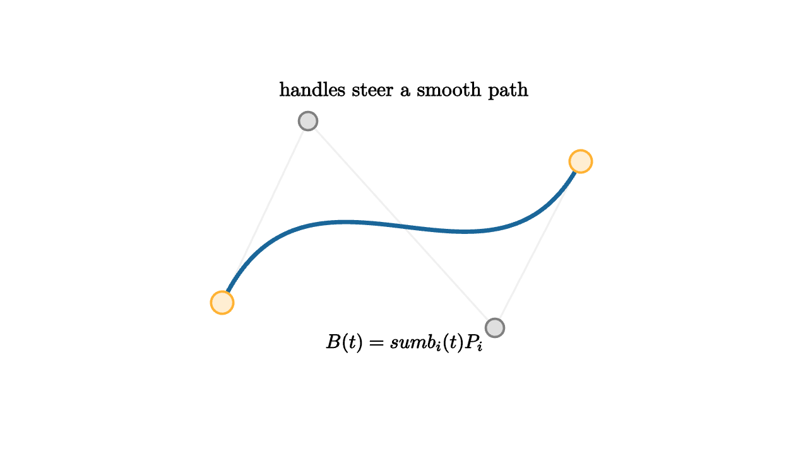

Bezier Curves Are Controlled Motion
When a designer drags a handle in a vector drawing program, the curve responds smoothly. The handle point usually does not lie on the curve. It controls the curve's motion. Bezier curves are the mathematics behind that interaction.
A cubic Bezier curve is built from four control points $P_0,P_1,P_2,P_3$:
The curve starts at $P_0$ and ends at $P_3$. The first handle $P_1$ sets the initial direction, and the second handle $P_2$ sets the final approach direction.

source
let soft = |col, amount| lerp(WHITE, col, amount)
let P0 = 1.8l + 0.75d
let P1 = 0.95l + 1.05u
let P2 = 0.9r + 1.0d
let P3 = 1.75r + 0.65u
let B = |t| (1 - t)^3 * P0 + 3 * (1 - t)^2 * t * P1 + 3 * (1 - t) * t^2 * P2 + t^3 * P3
mesh diagram = [
stroke{soft(LIGHT_GRAY, 0.2), 1.8} Polyline([P0, P1, P2, P3]),
stroke{BLUE, 4} ParametricFunc(|t| B(t), [0, 1, 90]),
center{P0} fill{soft(ORANGE, 0.22)} stroke{ORANGE, 2.2} Circle(0.11),
center{P1} fill{soft(GRAY, 0.25)} stroke{GRAY, 2.2} Circle(0.09),
center{P2} fill{soft(GRAY, 0.25)} stroke{GRAY, 2.2} Circle(0.09),
center{P3} fill{soft(ORANGE, 0.22)} stroke{ORANGE, 2.2} Circle(0.11),
center{1.35u} Text("handles steer a smooth path", 0.72),
center{1.15d} Tex("B(t)=\\sum b_i(t)P_i", 0.70)
]The formula is useful, but de Casteljau's construction gives the better picture. Pick a value of $t$. Linearly interpolate between consecutive control points. Then interpolate between those new points. Then interpolate once more. The final point is $B(t)$.
This process uses only straight-line blending:
Repeated linear interpolation creates a smooth cubic path. The curve stays inside the convex hull of its control points, which helps designers predict its shape.
source
let soft = |col, amount| lerp(WHITE, col, amount)
let P0 = 1.8l + 0.75d
let P1 = 0.95l + 1.05u
let P2 = 0.9r + 1.0d
let P3 = 1.75r + 0.65u
let B = |t| (1 - t)^3 * P0 + 3 * (1 - t)^2 * t * P1 + 3 * (1 - t) * t^2 * P2 + t^3 * P3
let t = 0.42
let Q0 = lerp(P0, P1, t)
let Q1 = lerp(P1, P2, t)
let Q2 = lerp(P2, P3, t)
let R0 = lerp(Q0, Q1, t)
let R1 = lerp(Q1, Q2, t)
let S = lerp(R0, R1, t)
"Controls"
mesh curve = [
stroke{soft(LIGHT_GRAY, 0.2), 1.8} Polyline([P0, P1, P2, P3]),
center{P0} fill{soft(ORANGE, 0.22)} stroke{ORANGE, 2.2} Circle(0.11),
center{P1} fill{soft(GRAY, 0.25)} stroke{GRAY, 2.2} Circle(0.09),
center{P2} fill{soft(GRAY, 0.25)} stroke{GRAY, 2.2} Circle(0.09),
center{P3} fill{soft(ORANGE, 0.22)} stroke{ORANGE, 2.2} Circle(0.11),
center{1.35u} Text("control polygon first", 0.70)
]
play Fade(0.7)
"Lerp"
curve = [
stroke{soft(LIGHT_GRAY, 0.2), 1.8} Polyline([P0, P1, P2, P3]),
stroke{GREEN, 2.6} Polyline([Q0, Q1, Q2]),
stroke{ORANGE, 2.6} Line(R0, R1),
center{S} fill{soft(BLUE, 0.22)} stroke{BLUE, 2.4} Circle(0.11),
center{1.35u} Text("repeated lerp finds one curve point", 0.64)
]
play Trans(1.0)
"Curve"
curve = [
stroke{soft(LIGHT_GRAY, 0.2), 1.8} Polyline([P0, P1, P2, P3]),
stroke{BLUE, 4} ParametricFunc(|u| B(u), [0, 1, 90]),
center{S} fill{soft(BLUE, 0.22)} stroke{BLUE, 2.4} Circle(0.11),
center{1.35u} Text("as t moves, the point traces the curve", 0.64)
]
play Trans(1.0)Bezier curves are affine-friendly. If you translate, rotate, scale, or shear the control points, the curve transforms the same way. A renderer can transform the control polygon and trust the curve to follow. This property is one reason Beziers are so common in fonts, icons, CAD sketches, animation paths, and vector graphics.
The handles also encode derivatives. For a cubic,
That means the endpoint tangents are visible from the first and last handle segments. To join two Bezier segments smoothly, align the outgoing handle of one segment with the incoming handle of the next. For stronger smoothness, match their lengths in the right ratio.
Bezier curves teach a graphics theme that keeps returning: simple local rules can create expressive global shapes. The whole curve comes from blending points. No angle tables or special cases are needed. The designer moves handles, and the algebra turns those moves into controlled motion.
The Bernstein weights
The four scalar functions in the cubic formula are Bernstein polynomials:
They are nonnegative on $0\le t\le 1$ and add to one. That means every point on the curve is a weighted average of the control points. This explains the convex hull property: the curve cannot escape the convex hull of its controls.
The weights also show how influence moves. Near $t=0$, the first weight dominates. Near $t=1$, the last weight dominates. In the middle, the handles have their largest influence. A designer dragging $P_1$ mainly changes the early part of the curve, while dragging $P_2$ mainly changes the later part.
Splines and continuity
A single cubic Bezier segment is only one stroke. Fonts and illustrations use chains of segments. The join between two segments can have different levels of smoothness.
Position continuity means the first segment ends where the next begins. Tangent continuity means the outgoing and incoming handle directions align. Curvature continuity asks for a stronger match in how the tangent changes.
This is why vector editors show handles. They are visible controls for derivative information. Pull a handle longer, and the curve moves farther in that direction before bending away. Rotate a handle, and the tangent rotates. The interface is geometric calculus.
Approximation by subdivision
Renderers often draw Bezier curves by subdividing them into short line segments. De Casteljau's algorithm is perfect for this. At a chosen $t$, usually $t=1/2$, the construction splits one Bezier curve into two smaller Bezier curves that exactly trace the original curve when combined.
Subdivide until each segment is flat enough at the current zoom level. Then draw the control endpoints as a polyline. This is another example of continuous geometry becoming discrete computation while preserving a clear error story.
Bezier curves are controlled motion because every point is born from interpolation. That idea scales from one curve to entire animation paths, font outlines, easing functions, and surface patches.